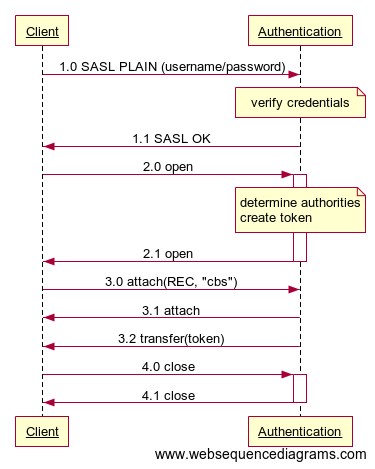

Authentication API
The Authentication API is used to retrieve a token asserting a subject’s identity and granted authorities. Other service implementations use such a token to make authorization decisions on a client’s request to read or write from/to a resource or to invoke a certain operation.
The Authentication API is defined by means of AMQP 1.0 message exchanges, i.e. a client needs to connect to an Authentication service using an AMQP 1.0 client in order to invoke operations of the API as described in the following sections.
Note that a component implementing this API will most likely need to also provide means to add, alter or remove identities and authorities as well. However, Hono itself does not require this kind of functionality, thus this kind of functionality is considered out of scope of this API.
In a real world environment there will often already be an identity management system in place. In such cases it can make sense to just implement a facade exposing the Authentication API operations and mapping them to the underlying existing system’s functionality.
Preconditions
The preconditions for performing any of the operations are as follows:
- Client is in possession of credentials for the subject to get a token for.
Operations
The Authentication API only defines a single operation which is mandatory to implement.
Get Token
Clients use this operation to
- verify a set of credentials and
- retrieve a token asserting the authenticated subject’s identity and granted authorities.
Message Flow
The following sequence diagram illustrates the flow of messages involved in a Client retrieving a token.

- The Client and Authentication service have agreed to use the SASL PLAIN mechanism for authenticating the client. The Client therefore sends the credentials of the identity it wants to retrieve a token for. The Authentication service successfully verifies the credentials and establishes the authorization ID.
- The Authentication service completes the SASL exchange with a successful outcome (SASL OK).
- The Client continues by opening an AMQP connection with the Authentication service. The Authentication service creates a token asserting the authorization ID and authorities established during the SASL exchange and associates it with the connection.
- The Client opens a receiving link using source address
cbs.- The Authentication service opens the link and
- sends the token associated with the connection to the Client.
- The Client closes the connection.
Token Message Format
On successful establishment of the receiving link with the client as described above, the server sends a message to the client containing a token asserting the identity and authorities of the client that has been authenticated as part of establishing the underlying AMQP connection.
The following table provides an overview of the properties of the message sent to the client.
| Name | Location | Type | Value |
|---|---|---|---|
| type | application-properties | string | amqp:jwt |
The message’s body consists of a single AMQP 1.0 AmqpValue section which contains the UTF-8 representation of a JSON Web Token as defined in Token Format.
Token Format
The token returned by the get Token operation is a cryptographically signed JSON Web Token as defined by RFC 7519.
The token contains the following mandatory claims:
| Name | Type | Value |
|---|---|---|
| sub | RFC 7519, Section 4.1.2 | The authorization ID of the authenticated client. This represents the asserted identity. |
| exp | RFC 7519, Section 4.1.4 | The point in time after which the claims contained in this token must be considered no longer valid. Clients MUST NOT use any information from a token that has expired. |
The subject’s authorities on resources and operations are represented by additional JWT claims with a name identifying the resource or operation and a value containing the activities the subject is allowed to perform. The following activities are supported:
- READ - The client is allowed to establish a receiving link using the resource’s node address as the link’s source address.
- WRITE - The client is allowed to establish a sending link using the resource’s node address as the link’s target address.
- EXECUTE - The client is allowed to invoke an operation on an endpoint, i.e. send a message over a link with a subject representing the operation name and the link’s target address representing the API endpoint’s node address.
The allowed activities are encoded in a claim’s value by means of simply concatenating the activities’ initial characters (R, W, E).
The token may contain any number of additional claims which may be ignored by clients that do not understand their meaning.
Resource Authorities
A client’s authority on a resource is represented by a JWT claim with a name containing the resource node address prefixed with r: and a value containing the activities the client is allowed to perform on the resource. The node address MAY contain one or more wildcard (*) characters to represent any string.
Example:
Assuming a client which is allowed to
- send and consume events for tenant
my-tenantand - consume telemetry data for all tenants
the corresponding claims (in the token’s JSON representation) would look like this:
{
...
"r:event/my-tenant": "RW",
"r:telemetry/*": "R",
...
}
Operation Authorities
A client’s authority to invoke an endpoint’s operation(s) is represented by a JWT claim with a name containing the endpoint’s node address and operation identifier prefixed with o: and a value of E (for EXECUTE). The endpoint node address MAY contain one or more wildcard (*) characters to represent any string. The operation identifier is the subject value defined by the corresponding API for the operation. The operation identifier MAY be set to * to represent any operation of the endpoint.
Example:
Assuming a client which is allowed to
- invoke the Device Registration API’s assert Registration operation for any tenant and
- invoke all methods of the Credentials API for tenant
my-tenant
the corresponding claims (in the token’s JSON representation) would look like this:
{
...
"o:registration/*:assert": "E",
"o:credentials/my-tenant:*": "E",
...
}